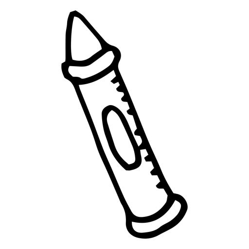
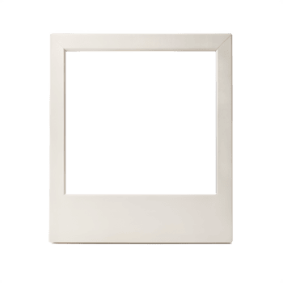
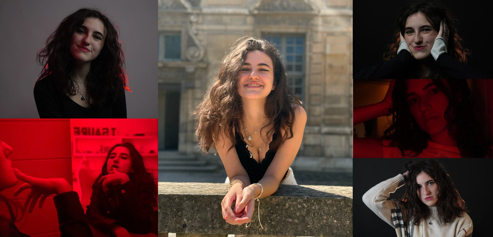
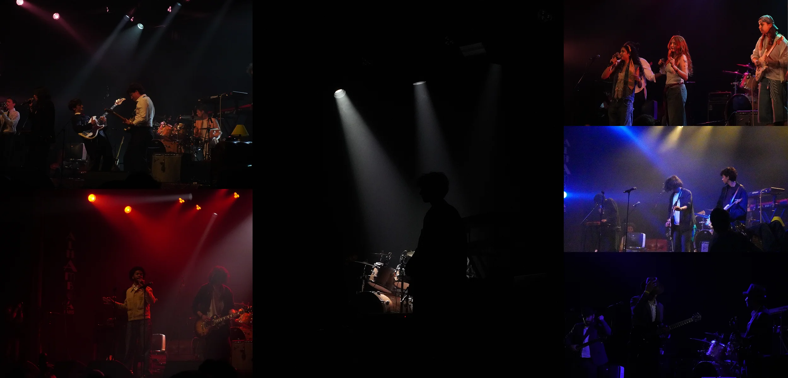
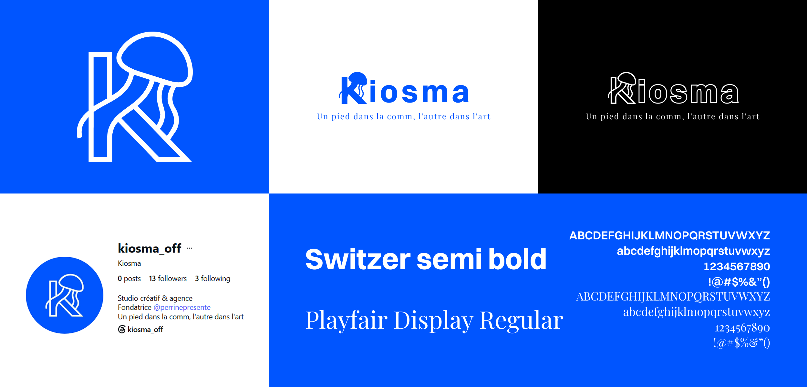
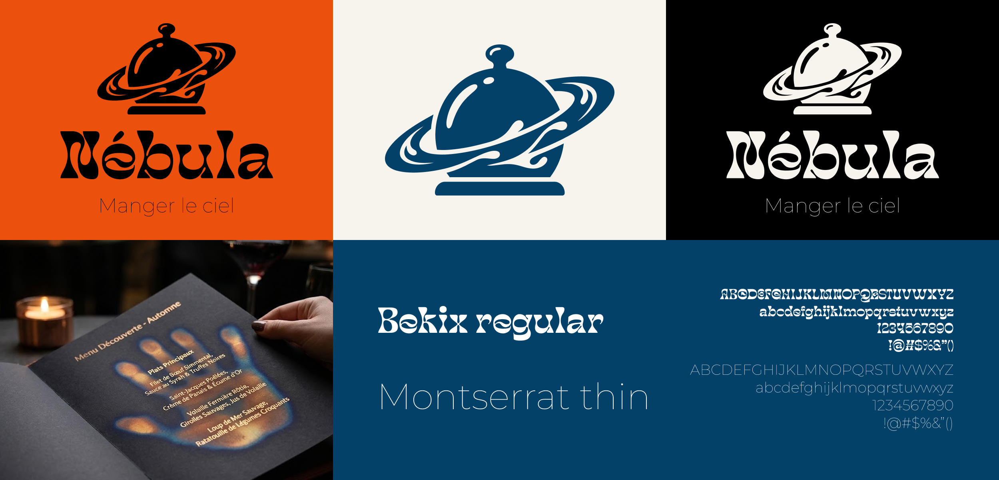
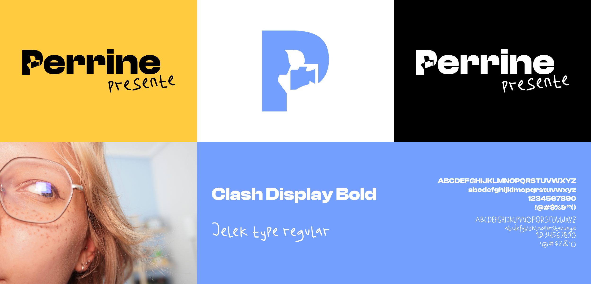
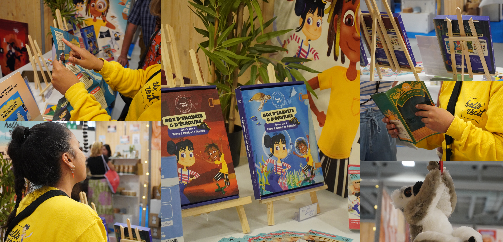

Profil polyvalent

Profil polyvalent



2024-2026
Expérimenter de nouvelles techniques de portrait pour enrichir mon portfolio.
Une série de prises de vue variées réalisée entre 2024 et 2026 pour explorer différentes ambiances créatives avec mon amie modèle.

https://www.instagram.com/lunaia._/
2026
Saisir l'atmosphère et l'énergie brute de la scène pour une première expérience en photographie de concert.
Une couverture spontanée réalisée pour l'association Campus en Musique, mettant en valeur la diversité des groupes et de leurs scénographies.

https://www.instagram.com/campusenseine/
2026
Développer l'identité et les supports de communication d'une agence créative indépendante.
Création du projet Kiosma, une structure de création de contenus guidée par la tagline « un pied dans la comm un autre dans l'art ».

https://www.instagram.com/kiosma_off/
2026
Kiosma
Concevoir une identité visuelle singulière et immersive pour un concept de restauration inspiré de l'astronomie.
Création complète de la charte graphique, du logo et des supports de communication autour d'un univers céleste et poétique.

2024-2026
Kiosma
Façonner une identité visuelle et des éléments de design sur-mesure pour dynamiser mes lives et ma chaîne.
Conception graphique et mise en place des assets visuels (overlays, monogrammes et emotes) pour structurer l'univers de mon activité de créatrice de contenu.

https://www.instagram.com/perrinepresente/
2026
Hello récit
Couvrir l'événement et capturer l'ambiance du stand pour valoriser la présence de la maison d'édition.
Reportage photo réalisé lors de la Foire de Paris pour immortaliser le stand et l'activité de Hello Récit, maison d'édition jeunesse.

https://www.instagram.com/hellorecit/